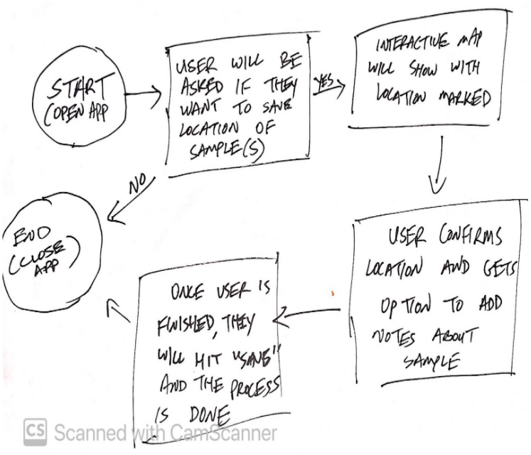

Project Context
I had the opportunity to work with Christian Perez, Salwa Tecleab, and Dee Yeshitla in an
Interactive Media Design course. We were challenged to create a design which would improve
Earth-Mars communication. The design process concluded
with a demo of a high fidelity prototype for our application.
Design Question
We decided to design an application which analyzes rock samples on Mars and sends the data
to Earth.
┌
"What kind of interface would support our user's tasks?"
┘
Our first step was to identify our user's tasks and goals.
To do this, we did research on previous Mars missions, the daily activities of the astronauts,
and the existing situational/environmental limitations.
Proto-personas
To better understand our users, we identified our primary and secondary
users and created proto-personas for each individual. Our first user is Sandy,
a geologist sent to Mars on a mission to collect and send geographic data. Our second user
is George (mission control) and he will be on the receiving end of the data.
Based on our previous research,
we came up with qualifications and traits for each individual. Using this information, we
noted the needs and goals of our users in order to come up with user task flows.
User Task Flows
We created flow charts for our user tasks by breaking down the steps that
they would go through when using our application. The flow chart starts with the opening
of the app, then prompts the user the mark the location where the rock sample was found. After
confirming, the device will analyze the sample and allow the user to save the data when done.
Finally, the user can close the app to finish the process.

Wireframing
Using our user task flow as a base, we sketched out wireframes
for the application as the user navigates through the steps. Prompts
such as "save location" will pop up when the app is activated, will a simple yes or no option.
After each step, messages will be displayed to ensure the user
that their task has successfully been completed, such as "location saved" or "file saved."

We kept in mind ease of use and clarity for each of the
frames, removing uneccessary buttons and menus that could cause confusion. We also made sure
to include important components such as back buttons for each screen so that the user can
navigate back and forth between frames.
Usability Tests
We used the Marvel App to conduct a usability test of our low
fidelity prototype. To do this, we assigned moderator and note taker roles between the members
of our group, swapping roles for each test.